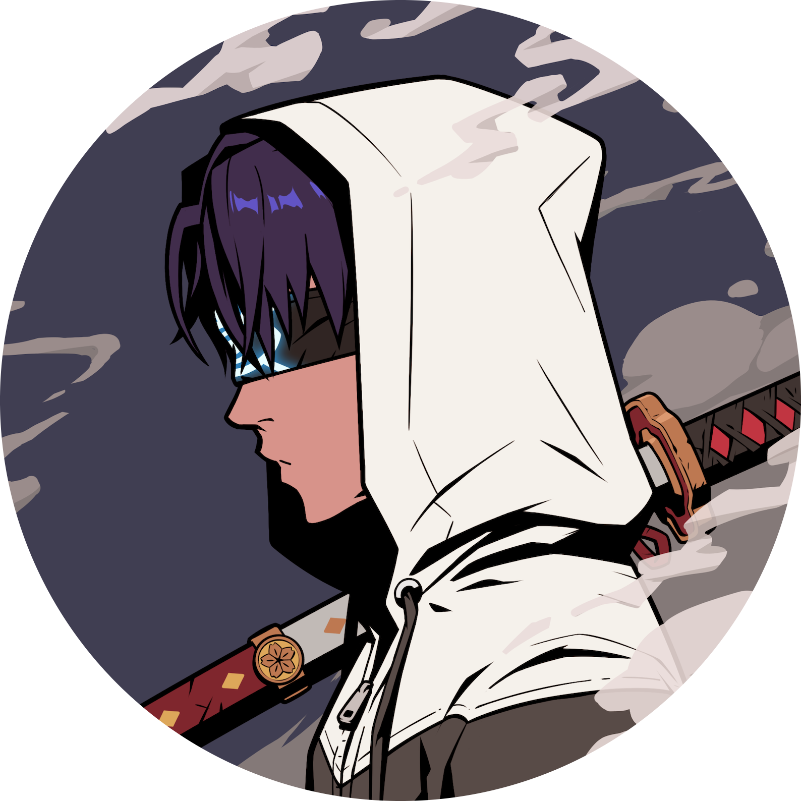

Available for projects
Hi, I'm Nanduri Tribhuvan
Also known as Fokin
Backend Developer & Security Enthusiast
About Me
I am a self-taught, fast-learning Backend Developer passionate about architecting scalable systems and contributing to open-source software.
Beyond standard backend engineering, my technical interests delve into systems architecture, AI/ML, offensive security, and malware research.
Experience & Teams
-
Sarvaya Technologies Backend & Systems
-
Azuki
-
ACM Projects
-
Tealstone
Featured Projects
Gradvaly / TallyValy
Sarvaya TechCore backend development and data workflows for evaluation, records management, and automated platform pipelines.
Backend Architecture
API Design
Database Systems
Prembroke
Personal ProjectCustom-built utility and backend service engineered for optimized performance, modularity, and automated toolchains.
TypeScript
Node.js
Automation
Core Stack & Focus Areas
TypeScript
JavaScript
Python
Node.js
AI / ML
Pentesting
Malware Dev
Open Source
Let's build something resilient together
Have an open source project, role, or technical collaboration in mind? Feel free to reach out.
Contact Me